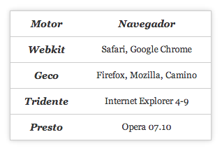

¿Qué es HTML5?
De acuerdo con Web W3C se basa en 3 pilares:
- Un esquema para localizar fuentes de información en la Web.
- Un protocolo de acceso para acceder a estas fuentes, en la actualidad el HTTP.
- Un lenguaje de hipertexto, para facilitar la navegación de información.
Algunos cambios
HTML5 cambia la forma de escribir código y organizar la información de la página.
- Más semántica con menos código.
- Más interactividad sin la necesidad de instalación de plugins y pérdida de rendimiento.
- Código interoperables, listo para futuros dispositivos y facilita la reutilización de la información en varias formas.
HTML5 se está creando para que sea compatible con los navegadores más recientes, lo que permite de inmediato el uso de las nuevas características.
Motores de renderizado

No todo es perfecto. Actualmente Webkit es el motor más compatible con los estándares HTML5.
Que pasa con IE?

Cambios de sintaxis HTML5
Doctype XHTML1.1
<! DOCTYPE html PUBLIC "-//W3C//DTD XHTML 1.0 Strict//EN"
"http://www.w3.org/TR/xhtml1/DTD/xhtml1-strict.dtd">
<! DOCTYPE html>
Charset metatag
<meta http-equiv="Content-Type" content="text/html; charset=utf-8">
<meta charset="utf-8">
Cambios de sintaxis HTML5
Tag LINK
<script type="text/javascript" src="jquery.js"></script>
<link rel="stylesheet" type="text/css" href="styles.css" />
<script src="jquery.js"></script>
<link rel="stylesheet" href="styles.css" />
<! DOCTYPE html>
<html lang="es">
<head>
<meta charset="utf-8" />
<title>Estructura básica de una pagina web en HTML5</title>
</head>
<body>
<header>
<nav>
<a href="inicio.html">Inicio</a>
<a href="nosotros.html">Nosotros</a>
<a href="opcion.html">Opcion</a>
</nav>
</header>
<!-- Cuerpo de la pagina -->
<footer>
<small>Derechos reservados</small>
</footer>
</body>
</html>
¿Se puede usar ya todo?
Hay partes de HTML5 que son:
- Fiables desde ya
- Apenas utilizables
- Por desgracia, extrañas
- Interesantes pero ignorables
- Fundamentalmente para experimentar con aplicaciones web
Adiós a la divitis
Nuevos tags
<header>
La W3C lo define:
El elemento header representa un grupo de ayudas introductorias o de navegación.
- Logo y título
- Navegación
- Uno o más encabezados
<nav>
La W3C lo define:
Representa una sección de una página que enlaza a otras páginas o partes de una página: una sección con enlaces para navegar.
- Puede haber varios en cada página
- Las migas de pan son un
<nav> - Un blogroll no es un
<nav>
<footer>
La W3C lo define:
Representa un footer para el contenido de sección [...] más cercano que le anteceda. Suele contener información adicional sobre su sección [...].
- Puede haber varios en cada página
- Copyright, links, etc.
<article>
La W3C lo define:
Representa una composición autocontenida en un documento, página [...] que es, en principio, distribuible o reutilizable independientemente.
- Artículos de un blog o periódico
(obvio) - Comentarios, productos
(no tan obvio)
<section>
La W3C lo define:
Representa una sección genérica de un documento o aplicación. Una sección [...] es una agrupación temática de contenido, normalmente con un encabezado.
- Agrupa contenido semánticamente
- Sirve para páginas y artículos
<aside>
La W3C lo define:
Representa una sección de una página consistente en contenido relacionado tangencialmente con el contenido que le rodea, y que se podría considerar separado de dicho contenido.
- Sidebar
(obvio) - Anuncios o "fat footer"
(no tan obvio)
<hgroup>
La W3C lo define:
Representa el encabezado de una sección. [...] Se utiliza para agrupar una serie de h1-h6 cuando el encabezado tiene múltiples niveles, como subtítulos, títulos alternativos, o slogans.
<figure>
La W3C lo define:
Representa un contenido fluído, opcionalmente con una leyenda, autocontenido [...].
<figcaption>
La W3C lo define:
Representa un una leyenda para el resto de contenidos de su elemento figure padre.
<datetime>
La W3C lo define:
Permite poner el contenido de un time en un formato que una máquina pueda entender.
<mark>
La W3C lo define:
Representa una porción de texto [...] marcada o destacada con un propósito de referencia, debido a su relevancia en otro contexto.
Tags que fueron cambiando con el tiempo
-
<cite>sólo se puede utilizar para marcar la obra, no al autor. Rompe la retrocompatibilidad con anteriores versiones de HTML, y ha generado mucho debate. -
<em> <i>:<em>denota énfasis, mientras que<i>marca una cursiva con fines estilísticos, por ejemplo un extranjerismo. -
<strong> <b>:<strong>denota importancia, mientras que<b>marca una negrita con fines estilísticos, sin una importancia especial -
<small>para marcar la "letra pequeña", por ejemplo copyrights, aspectos legales…
<audio> <video>
Una nueva forma de incrustar vídeos y audios de forma nativa:
<audio src="cancion..." > </audio>
<video src="video..." > </video>
Attr
<autoplay> <controls> <poster> <width> <height> <loop> <preload> <src>
Algunas otras cosas nuevas
Inputs
<input type="email">
<input type="url">
<input type="tel">
<input type="search">
<input type="number">
<input type="range">
<input type="color">
Controlador de tiempo
<input type="date">
<input type="time">
<input type="datetime">
<input type="month">
<input type="week">
Algunas otras cosas nuevas
Input list
// Permite añadir opciones, de forma similar a un select
<input type="text" list="payasos">
<datalist id="payasos">
<option value="Miliki">
<option value="Fofó">
<option value="Gaby">
</datalist>
Attr
"autofocus", "placeholder", "min", "max", "step", "required"
"pattern" permite añadir una expresión regular
// Un ejemplo
<label for="dni">DNI:</label>
<input pattern="[0-9]{8}" id="dni" placeholder="Ingresa tu DNI">
Hasta acá todo bien! pero qué pasa con IE6, IE7, IE8 ?
Soporte HTML5 - Técnicas de detección
Puede ser que el usuario utilice un navegador que no soporte HTML5. En este caso, podemos servir versión más simple, o simplemente mostrar una alerta al usuario acerca de la importancia de actualizar el navegador.
Modernizr
if (Modernizr.geolocation) {
// Aceptar la función
} else {
// No aceptar la función de la prueba.
}
HTML5 shiv
<!--[if lt IE 9]>
<script src="http://html5shim.googlecode.com/svn/trunk/html5.js"></script>
<![endif]-->
Otras APIs de HTML5
<canvas> <svg>
- Canvas: mapa de bits.
- SVG: vectores.
- Se puede interactuar con ellos.
- Canvas no crea nodos en el DOM, SVG sí.
- Canvas tiene más problemas de accesibilidad.
Web Storage
-
Establecer un valor:
localStorage.setItem('clave','valor'); -
Recuperar un valor:
localStorage.getItem('clave'); -
Eliminar un valor:
localStorage.removeItem('clave'); -
Limpiar el Storage:
localStorage.clear();
Web SQL
- Almacena BBDD en tu navegador
- El desarrollo se ha abandonado y podría desaparecer de la especificación
Offline
- Navegar sin conexión
-
Recuperar un valor:
localStorage.getItem('clave'); - Una nueva Cache nos permite acceder a páginas sin estar conectados
- IE... no no no!
// Tenemos que definir el "manifest.cache"
<html manifest=manifest.cache>
CACHE MANIFEST
index.html
styles.css
images/logo.png
Drag and drop
- Podemos arrastrar cosas y soltarlas!
- "Rescatado" de Internet Explorer 5.
- API bastante irregular.
Geolocalización
Poniendo al usuario en el mapa
- Tiene poco que ver con el resto de la especificación HTML5.
- Basado principalmente en GPS.
- El usuario debe autorizar el acceso a esta información. especificación
Web Messages
Comunicación entre dominios
- Una API para la comunicación segura entre dominios.
- Envia mensajes de texto (instrucciones) de un dominio a otro.
- Es la base para los Web Workers y Web Sockets.
Web Workers
Duendes que trabajan por la noche
- Una API para lanzar procesos en segundo plano.
- El usuario puede seguir haciendo otras cosas.
- Pueden hacer peticiones XMLHttpRequest, pero no manipular el DOM.
Web Sockets
El servidor llama a tu puerta
- Nueva forma de comunicación bidireccional.
- El socket se mantiene abierto hasta que lo cerremos explícitamente.
- El servidor puede enviarnos cosas a través del socket.
- No es necesario una petición AJAX constante.
Algo de CSS3
¿Qué es CSS?
CSS es un lenguaje de hojas de estilos creado para controlar el aspecto o presentación de los documentos HTML. CSS es la mejor forma de separar los contenidos y su presentación y es imprescindible para crear páginas web y apps.
- Mejora la accesibilidad del documento
- Reduce la complejidad de su mantenimiento
- Permite visualizar el mismo documento en infinidad de dispositivos diferentes.
Lo basico

Ventajas
Una de las ventajas de CSS es que permiten definir diferentes estilos para diferentes dispositivos.
@media
@media print {
body { font-size: 10pt }
}
@media screen {
body { font-size: 13px }
}
@media screen, print {
body { line-height: 1.2 }
}
<link rel="stylesheet" media="(max-width: 800px)" href="example.css" />
@media (max-width: 600px) {
.facet_sidebar {
display: none;
}
}
Seudo...
:after | ::after
:before | ::before
:first-letter | ::first-letter
:first-line | ::first-line
::selection
:link
:visited
:active
:hover
:focus
:checked
:enabled
:default
:disabled
:indeterminate
:invalid
:optional
:required
:valid
@import
Permite importar reglas desde otras hojas de estilo.
Sintaxis
@import url;
// or
@import url list-of-media-queries;
Algunos ejemplos
@import url("fineprint.css") print;
@import url("bluish.css") projection, tv;
@import 'custom.css';
@import "common.css" screen, projection;
@import url('landscape.css') screen and (orientation:landscape);
Uso de CSS transforms
permiten cambiar la posición del contenido afectado sin interrumpir el flujo normal. Se implementan haciendo uso de un conjunto de propiedades CSS que permiten aplicar transformaciones lineales a elementos HTML. Estas transformaciones incluyen rotar, torcer, escalar y desplazar en plano o en un espacio 3D
Sintaxis
.elemento{
width:200px;
height:100px;
background-color:yellow;
/* Rotate div */
transform:rotate(7deg);
-ms-transform:rotate(7deg); /* IE 9 */
-webkit-transform:rotate(7deg); /* Opera, Chrome, and Safari */
}
ejemplo
Animation
Las nuevas características de CSS nos permiten añadir efectos de animación a la mayoría de elementos HTML, sin necesidad de Javascript o Flash.
Ejemplo
<div class="elemento"></div>
Toda la magia de este lado
.elemento{
width:100px;
height:100px;
background:#FF0000;
position:absolute;
top:0;
}
/* Para navegadores webkit */
@-webkit-keyframes mover_caja{
0%{left:90%;}
50%{left:10%;}
100%{left:90%;}
}
/* Para Firefox */
@-moz-keyframes mover_caja{
0%{left:90%;}
50%{left:10%;}
100%{left:90%;}
}
/* Llamo a animación */
.elemento{
-webkit-animation:mover_caja 5s infinite;
-moz-animation:mover_caja 5s infinite;
}
ejemplo
Transitions
Las transiciones en CSS3 funcionan de un modo similar a las animaciones. Pewrmite realizar transiciones con CSS3 nos permite incorporar una animación al cambiar de un estilo a otro. Deberemos especificar:
- La propiedad CSS a la que deseamos agregar un efecto.
- La duración del efecto.
Ejemplo
<a href="#" class="elemento">Ver ejemplo</a>
Toda la magia de este lado
a {
padding: 5px 10px;
background: #9c3;
}
a:hover {
background: #333;
}
a {
padding: 5px 10px;
background: #9c3;
-webkit-transition-property: background;
-webkit-transition-duration: 1s;
-webkit-transition-timing-function: ease;
-moz-transition-property: background;
-moz-transition-duration: 1s;
-moz-transition-timing-function: ease;
}
a:hover {
background: #333;
}
ejemplo
Gracias.